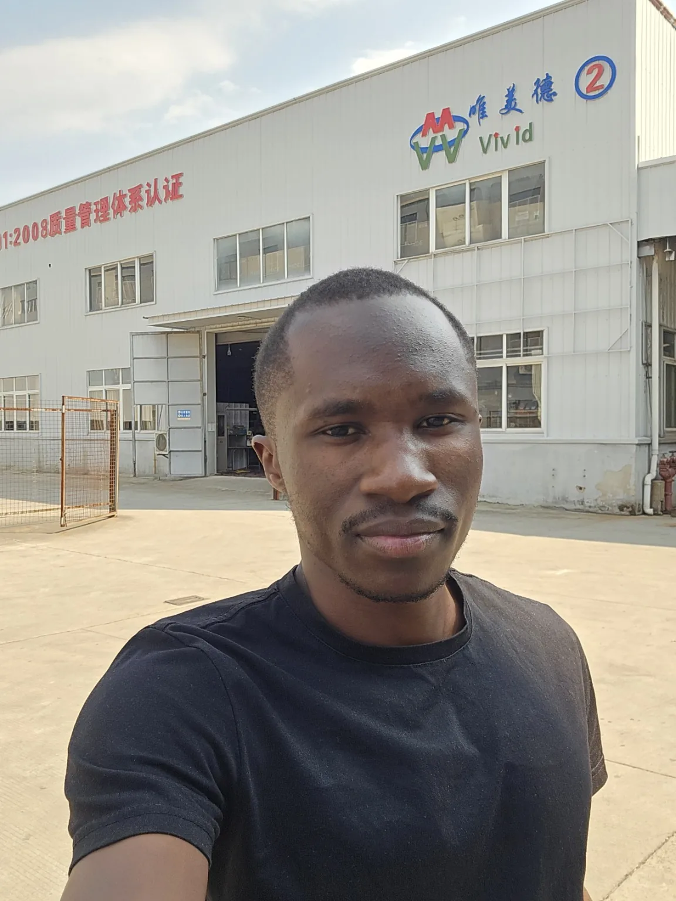
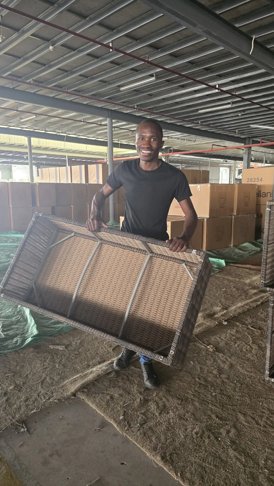
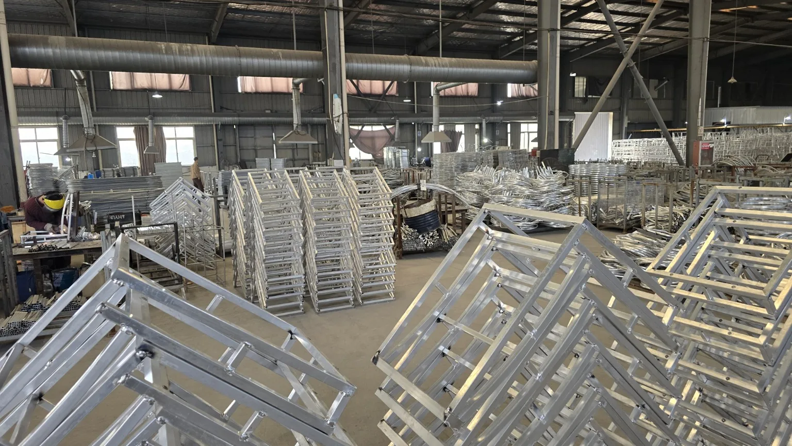

Operations & Business Operations
Operating cadence, KPI governance, EOS execution, cross-functional coordination, SOPs, executive reporting, issue resolution, service continuity and accountability.
I turn supply chain, quality and operational complexity into measurable improvement in cost, service and execution.
8+ years across manufacturing, international supply chain, logistics, quality and business operations - increasingly using automation and AI to improve execution.

Evidence over adjectives.
Operations from problem to execution.
Operating cadence, KPI governance, EOS execution, cross-functional coordination, SOPs, executive reporting, issue resolution, service continuity and accountability.
International sourcing, demand planning, supplier management, freight, 3PLs, warehousing, final mile, inventory, negotiation and commercial cost improvement.
Supplier and manufacturing quality, CAPA, root-cause analysis, SPC, PFMEA, MSA, inspection systems, 5S, product improvement and customer-issue reduction.
Workflow automation, Microsoft 365, AI-assisted reporting, CRM integration, operational intelligence and practical use of n8n, Make.com and business APIs.
Evidence from real operating problems.



Supported supplier-continuity negotiations, studied mature supplier operations and helped formalise quality and process controls at an early-stage Hunan furniture operation.
Reworked logistics economics across storage, unloading, picking and final-mile delivery, then led the transition into a more efficient 3PL model.
Functioned as the internal EOS Integrator, translating leadership priorities into VTO reviews, Rocks, scorecards, Level 10s, Issues/IDS and follow-through.
Connected customer evidence, supplier quality, packaging, handling, delivery and product design changes to reduce returns by cubic volume.
Built a live workflow that retrieved leadership meeting information, applied AI-assisted analysis and returned structured reporting to Microsoft Teams.
Technology as part of the operating system.
Converts recurring leadership meeting information into structured AI-assisted reporting using Microsoft 365 retrieval, workflow state and Teams delivery.
A two-stage Collector and Publisher system designed to connect operational problems with relevant AI developments and produce a curated weekly intelligence update.
A WhatsApp-based assistant combining text and audio, transcription, conversational memory, structured context, controlled tools, commitments, check-ins and external search.
Engineering foundation. Operations career.
Cross-functional Operations Manager and internal EOS Integrator, translating leadership priorities into execution through VTO planning, quarterly Rocks, current/future Accountability Charts, SLT and departmental Level 10s, leadership scorecards, cash-flow and finance reviews, Issues/IDS and AI-enabled workflow automation.
Led international supply chain, logistics, quality and technical operations across a China-based supplier network, 1,000+ SKUs and UK logistics operations. Scope included demand planning, supplier quality, commercial negotiation, warehousing, freight, final mile, returns, product improvement and direct supplier/factory engagement in China.
Led manufacturing-quality controls, inspection, corrective action and complaint improvement, reducing customer complaints from approximately 12% to 5% while maintaining KEBS audit compliance.
Automotive manufacturing quality using SPC, PFMEA, MSA, control plans and corrective action, including reduction of U-bolt rejection from approximately 4% to 2%.
FMCG production engineering, preventive and reactive maintenance, utilities, SAP PM, troubleshooting, line efficiency and specialist-vendor overhaul coordination.
Business systems used to strengthen operations.
SAP PM, OrderWise, Xero, eDesk, Sage HR, Microsoft 365, SharePoint and Teams.
Excel, practical Power BI, KPI scorecards, forecasting, cost analysis, reconciliations and executive reporting.
Make.com, n8n, Power Automate, Microsoft Graph, webhooks, OpenAI APIs and structured workflow design.
JSON, REST APIs, authentication/OAuth, Git/GitHub, Python and more advanced error-handling patterns.
Jomo Kenyatta University of Agriculture and Technology
Second Class HonoursITIL 4 • Scrum • ISO 9001 Internal Auditor
For relevant opportunities across Operations, Business Operations, Supply Chain, Quality, Process Improvement and AI-enabled Operations, choose the easiest way to reach me.